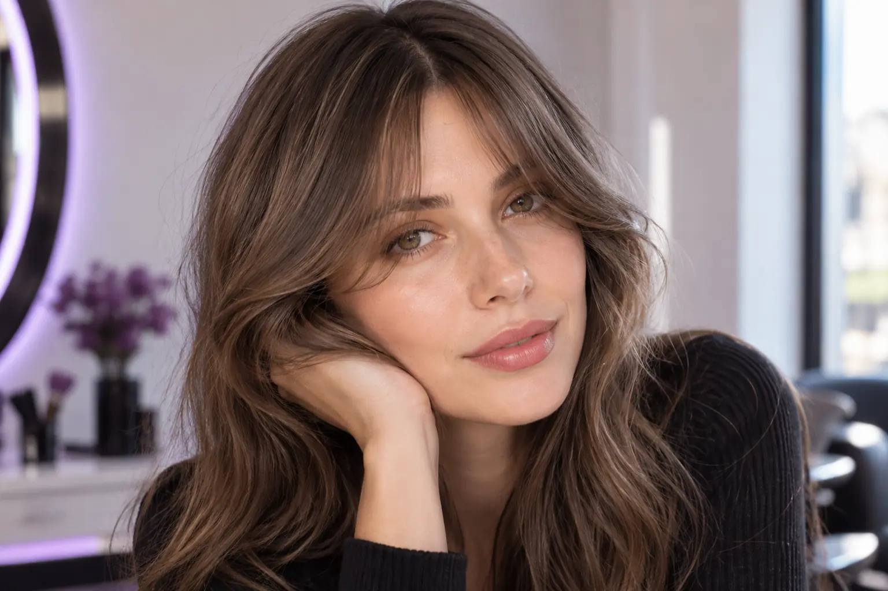

Kirpčiukai: ilgis, forma ir kasdienė priežiūra prieš apsisprendžiant
Autorius: Madbeauty redakcija · Numatyta 2026 m. spalio 23 d. 16:00 (Lietuvos laiku)
Kaip atskirti kirpčiukus nuo veidą įrėminančių sruogų ir pasirinkti užduotį pagal natūralų plaukų kritimą bei norimą kasdienę priežiūrą.

Kirpčiukus rinkitės pagal tris dalykus: kokio ilgio ir formos norite prie veido, kaip natūraliai krenta plaukai ir kiek laiko skirsite kasdieniam formavimui. Vien veido formos ar įkvepiančios nuotraukos neužtenka pažadėti, kaip kirpimas atrodys jums — konkrečią užduotį turi įvertinti kirpėjas.
Trumpesnė forma prie veido ar tikri kirpčiukai?
Šie norai gali reikšti skirtingą kirpimo apimtį. Kirpčiukai apima plaukus virš kaktos, o veidą įrėminančios sruogos gali prasidėti šonuose ir susilieti su likusia šukuosena. Prieš vizitą nuspręskite, ar norite pakeisti plaukų ilgį virš kaktos, ar tik sušvelninti šukuosenos kontūrą aplink veidą.
- Jei norite kirpčiukų per kaktą, parodykite pageidaujamą ilgį ir nurodykite, kur turėtų baigtis jų šoninės ribos.
- Jei norite mažesnio pokyčio, aptarkite šonines veidą įrėminančias sruogas ir tai, kaip jos susijungs su dabartiniu kirpimu.
- Jei dar nesate tikri, paprašykite kirpėjo įvertinti, kokią užduotį galima atlikti neįsipareigojant trumpinti daugiau plaukų, nei norite.
Augimo kryptis keičia aptariamą užduotį
Kirpčiukų ilgį ir formą aptariant svarbu parodyti, kaip plaukai krenta įprastai. Jei priekyje plaukai skiriasi į šoną ar auga kita kryptimi nei norėtumėte, paprašykite kirpėjo įvertinti tai prieš sutariant dėl formos. Nuotrauka gali padėti paaiškinti norą, bet ji neparodo, kaip toks kirpimas gulės ant jūsų plaukų.
Atsineškite vieną ar dvi nuotraukas, kurios parodo skirtingus jums svarbius dalykus: norimą ilgį, šoninę formą ar bendrą įrėminimą. Pasakykite, kas jose patinka, o ko nenorite perimti. Taip pavyzdys tampa aptarimo pradžia, o ne pažadu atkartoti tą patį rezultatą.
Formavimo poreikį derinkite prie kasdienybės
Prieš pasirenkant formą pagalvokite, kiek kasdienio formavimo jums priimtina. Tai padeda kirpėjui pasiūlyti aptarimui tinkamą variantą, tačiau konkretaus kirpimo priežiūros poreikis priklauso nuo jūsų plaukų ir pasirinktos formos.
- Jei norite kuo mažiau kasdienio darbo, pasakykite, kad svarbu, kaip plaukai atrodo be ilgo formavimo. Aptarkite, ar norima forma dera su natūraliu jų kritimu.
- Jei esate pasiruošę skirti laiko formavimui, įvardykite, kokį rezultatą mėgintumėte atkurti namuose ir kokius įpročius norite išlaikyti.
- Jei dar nežinote, paprašykite po kirpimo parodyti, kaip formą prižiūrėti, ir įvertinkite, ar tokia kasdienė rutina jums priimtina.
Kirpčiukų kirpimas meniu neapibrėžia viso vizito
Paslaugos pavadinimas nusako pasirinkimo kategoriją, bet savaime nepaaiškina, kokie darbai įtraukti. Prieš susitariant patikslinkite, ar kalbama tik apie kirpčiukų formos korekciją, ar kartu bus kerpama likusi šukuosena, ir kokie papildomi darbai gali turėti įtakos kainai ar vizito trukmei. Universalaus tarifo ar trukmės čia nustatyti negalima — juos lemia konkretaus teikėjo sąlygos ir sutarta apimtis.
Peržiūrėti nacionalinį katalogo pasirinkimą galima skiltyje Kirpčiukų kirpimas. Paslaugos kategorija yra pradinis pasirinkimas; miestą reikia pasirinkti aiškiai. Pats katalogas nepatvirtina, kad konkrečiame mieste yra teikėjas ar laisvas vizito laikas.
Trumpas pasiruošimas pokalbiui
Prieš sutikdami su siūloma forma, įsitikinkite, kad aptarėte šiuos dalykus:
- Kiek trumpesnių plaukų prie kaktos norite ir kokio ilgio nenorite peržengti?
- Ar siekiate kirpčiukų, ar tik šoninių veidą įrėminančių sruogų?
- Kaip priekyje plaukai krenta įprastai ir ką kirpėjas siūlo atsižvelgdamas į jų augimo kryptį?
- Kiek kasdienio formavimo jums priimtina ir kokie darbai įeina į sutartą paslaugą?
Aiškiai įvardyta norima forma, jos ribos ir kasdienės priežiūros lūkesčiai leidžia aptarti tikrą kirpimo užduotį, o ne vien mėginti atkartoti nuotrauką.
Susiję gidai
Šaltiniai
- Cut and clipper hair using hairdressing techniques · SQA / SkillsActive